|
|
Летние велопрогулки 2007
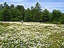 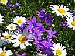 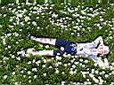 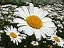 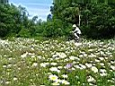 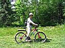 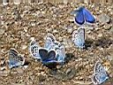 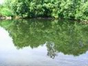 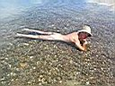 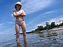
29 июля. Поехал я за черникой. От поселка Новоснежный через трассу, по лесной дороге в сторону Хамар-Дабана. Черника появилась сразу после ЛЭПки, но я решил катануть дальше, потому как тут было много ягодников. Укатил в самую глушь. Черника прямо у дороги, далеко ходить не надо. Собрал ведерко на 3 литра, блин, нудновато без совка! Сгонял на речку, искупался, потом еще 3 литра собрал и обратно.
Вот обратно дорога под горку-то порадовала! Адреналин, лужи и грязь, скорость до 35км/ч :) Супер дорожка! 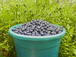 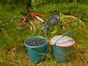
11 августа. Окуневое озеро на Мамае я всё таки нашел :) Дорога туда разбита джипами, отдыхающие человеки позанимали почти все поляны, а вода теплейшая! Отличное озеро! Накупался и обратно. Созвонился со старыми друзьями из Иркутска, Алексей и Татьяна приехали накануне на авто и сейчас отдыхали на Снежной. Приехал к ним. Пили пиво, вспоминали студенческую и пост-студенческую рабочую жизнь, а также житейские дела насущные. Потом экстремально искупались в Снежной, нафиг, вода холодная и быстрая :) Поехали на Теплое на тарзанку прыгать, потом еще на Мертвое сходили прогулялись. Уже собрались уезжать с турбазы и случайно захлопнули машину на самоблокировку. Пришлось нам с Лёхой учиться вскрывать иномарку ржавой проволокой и топориком :) Потом еще жгли костер у палатки и пили водку. Приехал в Выдрино в час ночи. Утром на спидометре обнаружил 80км (?) Блин, вот так покатался, вот так отдохнул :) ! 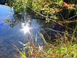 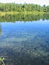 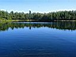
Июль, август 2007 |